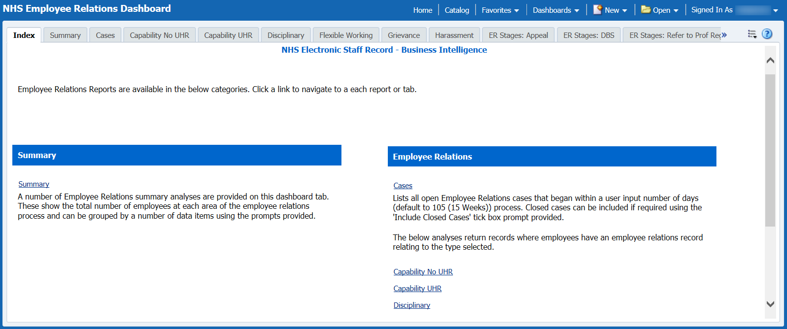
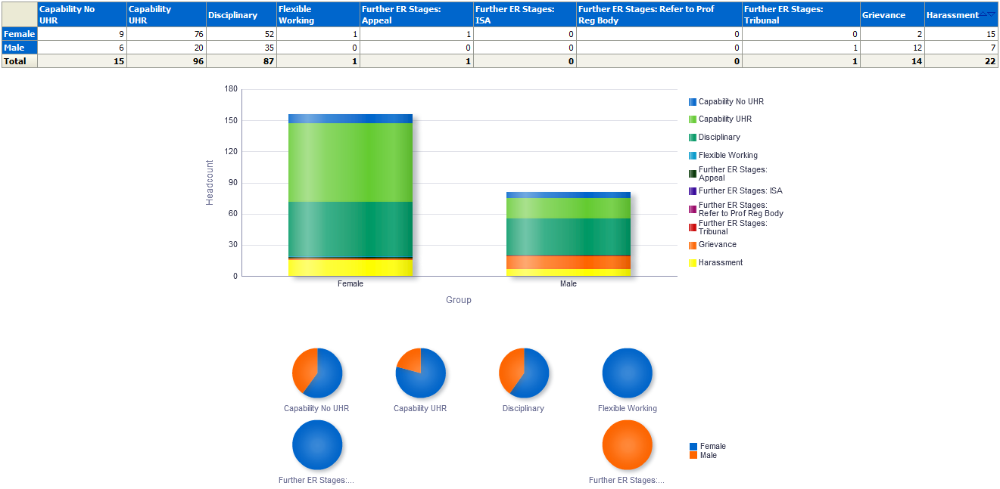
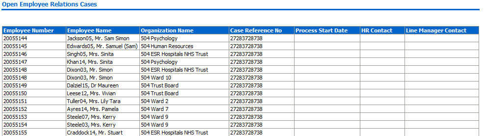

Employee Relations Dashboard
Description
The Employee Relations Dashboard is split into eleven dashboard pages and follows the standard design used by all NHS Standard Dashboards. The summary page provides an overview grouped by each area of the employee relations process. A Date range is used when filtering the Dashboard so that leaver details can be included if required. Pages are then provided to show a detail view at employee level of each area. Prompts are provided for the user to filter each page to show open-ended cases only.
Allocation
This dashboard is available to the following URPs:
XXX Business Intelligence Administration
XXX Employee Relations Administration
Prompts
Date Between (default: first of previous month to current date)
Group By (default: gender)
Staff Group
Restrict to open cases only (default: Yes)
Organisation Level 1-13
Assignment Status
Index
Description
Employee Relations reports are available in two different categories below:
-
Summary
-
Employee Relations
From this tab users can click on links provided to navigate to reports.
Example Screenshot

Employee Relations Summary
Description
A number of analyses are provided on this dashboard tab. At the top three views are provided of the number of ER cases. A Table, Bar Graph and Pie Graph are able to be grouped by a number of data items using the prompt provided and show the total number of employees at each area of the employee relations process. Below that a view of Disciplinary cases is provided. To the right a view of cases by HR Advisor Contact, and at the bottom a view of cases by Organisation.
Summary
Data Items
| Title | Description |
|---|---|
| Group | Group By: Gender, Ethnic Origin, Age Band, Disability, Religious Belief, Sexual Orientation |
| Capability No UHR | |
| Capability UHR | |
| Disciplinary | |
| Flexible Working | |
| Further ER Stages: Appeal | |
| Further ER Stages: ISA | |
| Further ER Stages: Refer to Prof Reg Body | |
| Further ER Stages: Tribunal | |
| Grievance | |
| Harassment |
View Selectors
None
Example Screenshot

Cases
Description
By default this analysis is designed to show all open Employee Relations cases that began within a user input number of days (default to 105 (15 Weeks)) process. Users are able to define the period using the Date Between prompt or Case From and To Date prompts available.
Data Items
| Employee Number | Employee Name |
|---|---|
| Organisation Name | Organisation Level 1-13 |
| Type of Case | Case Reference Number |
| Process Start Date | Process End Date |
| HR Contact | Line Manager Contact |
| Staff Group | Job Role |
Prompts
Date Between
Case From Date
Case To Date
Staff Group
Assignment Status
Show cases that were opened more than X Days ago where X =
Example Screenshot

Capability No UHR
Description
This analysis is designed to provide a detail view of the Capability No UHR area of Employee Relations.
Column Selectors x 4
Organisation Name
Organisation Level 1-13
Ethinic Origin
Data Items
| Employee Number | Initial Meeting Date |
|---|---|
| Employee Name | Employee Suspended |
| Headcount | External Agency Involved |
| FTE | Medical and Dental Only |
| Process Start Date | Stage or Level |
| Case Reference Number | Review Date |
| Position 1 | Represented By |
| Position 2 | Outcome |
| Position 3 | Warning Expiry Date 1 |
| HR Contact | Warning Expiry Date 2 |
| Line Manager Contact | Further ER Stages |
Capability UHR
Description
This analysis is designed to provide a detail view of the Capability UHR area of Employee Relations.
Column Selectors x 4
Organisation Name
Organisation Level 1-13
Ethinic Origin
Data Items
| Employee Number | Date of First Referral |
|---|---|
| Employee Name | Meeting Date |
| Headcount | Stage or Level |
| FTE | Represented By |
| Process Start Date | Return to Work |
| Case Reference Number | Job Amendment |
| Position 1 | Redeployment |
| Position 2 | Appl for Ill Health Retirement |
| Position 3 | Appl for Ill Health Ret Outcome |
| HR Contact | Outcome |
| Line Manager Contact | Warning Expiry Date 1 |
| Employee Medically Suspended | Warning Expiry Date 2 |
| Calendar Days Open | Further ER Stages |
Disciplinary
Description
This analysis is designed to provide a detail view of the Disciplinary area of Employee Relations.
Prompts
Display Assignments where Status is 'Suspended' but no Disciplinary Case (default: No)
This prompt enables users to show all assignments with a Status of Suspended (Suspend Assignment; Suspend No Pay; Suspend With Pay) but with no Disciplinary case associated.
Column Selectors x 4
Organisation Name
Organisation Level 1-13
Ethinic Origin
Data Items
| Employee Number | Medical and Dental Only |
|---|---|
| Employee Name | Employee Suspended |
| Headcount | External Agency Involved |
| FTE | Investigating Officer |
| Process Start Date | HR Contact |
| Case Reference Number | Line Manager Contact |
| Nature of Allegation | Represented By |
| Specific Allegation | Investigation End Date |
| Position 1 | Investigation Outcome |
| Position 2 | Stage or Level |
| Position 3 | Date of Hearing |
| Date of Alleged Incident | Hearing Outcome 1 |
| Procedure Used | Hearing Outcome 2 |
| Warning Expiry Date 1 | Hearing Outcome 3 |
| Warning Expiry Date 2 | Process End Date |
| Calendar Days Open | Further ER Stages |
Flexible Working
Description
The Flexible Working page is made up of a number of analyses designed to provide a summary and detail view of the Flexible Working area of Employee Relations.
Summary
Available are two analyses designed to enable users to report the number of Flexible Working requests grouped by a number of workforce fields such as Organisation Levels, Organisation, Staff Group and various protected characteristics. Also returned is the number and percentage of those requests that have been accepted. The other summary analysis returns employees where more than one Flexible Working request has been submitted.
Column Selectors x 1
Organisation Name
Organisation Level 1-13
Staff Group
Flexible Working Type
Various Protected Characteristics
Data Items
| Org Levels 1-13 | No. of Requests (Summary 2) |
|---|---|
| Organisation Name | Employee Number (Summary 2) |
| Gender Ethnic | Employee Name (Summary 2) |
| Disability | Staff Group (Summary 2) |
| Sexual Orientation | Role (Summary 2) |
| Religious Belief | |
| Flexible Working Type (Summary 1) | |
| Count of Flexible Working Requests (Summary 1) | |
| Accepted Requests (Summary 1) | |
| % of Approved Requests (Summary 1) |
Detail
This analysis is designed to provide a detail view of the Flexible Working area of Employee Relations
Column Selectors x 4
Organisation Name
Organisation Level 1-13
Ethinic Origin
Data Items
| Employee Number | Other Applications Made |
|---|---|
| Employee Name | Meeting 1 Date |
| Headcount | Within 28 Days |
| FTE | Represented at Meeting 1 By |
| Type | Meeting 2 Date |
| Process Start Date | Represented at Meeting 2 By |
| Case Reference Number | Decision Required By |
| Position 1 | Decision Date |
| Position 2 | Outcome |
| Position 3 | Grounds for Rejection |
| HR Contact | Effective Date of Change |
| Line Manager Contact | Date Decision Letter Sent |
| Date Application Received | Process End Date |
| Application Complete | Calendar Days Open |
| Requested Change | Meeting 1 Date |
Grievance
Description
This analysis is designed to provide a detail view of the Grievance area of Employee Relations.
Column Selectors x 4
Organisation Name
Organisation Level 1-13
Ethinic Origin
Data Items
| Employee Number | Line Manager Contact |
|---|---|
| Employee Name | Reason |
| Headcount | Stage |
| FTE | Meeting Date |
| Grievance Type | Represented By |
| Process Start Date | Outcome |
| Case Reference Number | Investigating Officer |
| Position 1 | Process End Date |
| Position 2 | Further ER Stages |
| Position 3 | HR Contact |
| Calendar Days Open |
Harassment
Description
This analysis is designed to provide a detail view of the Harassment area of Employee Relations.
Column Selectors x 4
Organisation Name
Organisation Level 1-13
Ethinic Origin
Data Items
| Employee Number | Line Manager Contact |
|---|---|
| Employee Name | Employee Suspended |
| Headcount | Alleged Perpetrator Category |
| FTE | Alleged Perpetrator Name 1 |
| Harassment Type | Alleged Perpetrator Name 2 |
| Process Start Date | Medical and Dental |
| Case Reference Number | Stage |
| Position 1 | Represented By |
| Position 2 | Meeting Date |
| Position 3 | Outcome |
| HR Contact | Process End Date |
| Calendar Days Open | Further ER Stages |
Further ER Stages: Appeal
Description
This analysis is designed to provide a detail view of the Further ER Stages: Appeal area of Employee Relations.
Column Selectors x 4
Organisation Name
Organisation Level 1-13
Ethinic Origin
Data Items
| Employee Number | End Date of Hearing |
|---|---|
| Employee Name | Appeal Outcome |
| Headcount | Comments |
| FTE | HR Contact |
| Case Ref Number | Line Manager Contact |
| Process Start Date | Nature of Appeal |
| Calendar Days Open |
Further ER Stages: DBS
Description
This analysis is designed to provide a detail view of the Further ER Stages: DBS area of Employee Relations.
Column Selectors x 4
Organisation Name
Organisation Level 1-13
Ethinic Origin
Data Items
| Employee Number | Case Reference Number |
|---|---|
| Employee Name | Date Referred |
| Headcount | DBS Outcome |
| FTE | Comments |
| Process Start Date | HR Contact |
| Alert Disclosure and Barring Service | Line Manager Contact |
| Alert Date Sent | Process End Date |
| Point of Contact for DBS | Removed From Regulated Activity |
| Calendar Days Open |
Further ER Stages: Refer to Prof Reg Body
Description
This analysis is designed to provide a detail view of the Further ER Stages: Refer to Prof Reg Body area of Employee Relations.
Column Selectors x 4
Organisation Name
Organisation Level 1-13
Ethinic Origin
Data Items
| Employee Number | Case Reference Number |
|---|---|
| Employee Name | Body |
| Headcount | Date Referred |
| FTE | End Date of Hearing |
| Reg Body Outcome | Comments |
| HR Contact | Line Manager Contact |
| Process Start Date | Calendar Days Open |
Further ER Stages: Tribunal
Description
This analysis is designed to provide a detail view of the Further ER Stages: Tribunal area of Employee Relations.
Column Selectors x 4
Organisation Name
Organisation Level 1-13
Ethinic Origin
Data Items
| Employee Number | Case Reference Number |
|---|---|
| Employee Name | Tribunal Level |
| Headcount | Nature of Claim |
| FTE | End Date of Hearing |
| Comments | Process Start Date |
| HR Contact | Line Manager Contact |
| Calendar Days Open |
Employee Relations List
Description
This analysis lists all the details of Employee Relations cases in Real Time.
Prompts
Person Type
Staff Group
Job Role
Employee Relations Type
Case Reference No
HR Contact
Line Manager Contact
Effective Date
Date From
Date To
Data Items
| Employee Relations Type | Disciplinary - Warning Expiry Date 2 |
|---|---|
| Last Name | Disciplinary - Further ER Stages |
| First Name | Grievance - Type |
| Title | Grievance - Position 1 |
| Employee Number | Grievance - Position 2 |
| Person Type | Grievance - Position 3 |
| Organisation | Grievance - Reason |
| Staff Group | Grievance - Stage |
| Job Role | Grievance - Meeting Date |
| Case Reference No | Grievance - Represented By |
| Process Start Date | Grievance - Outcome |
| Process End Date | Grievance - Investigating Officer |
| HR Contact | Grievance - Warning Expiry Date |
| HR Contact Current Person Type | Grievance - Further ER Stages |
| HR Contact Current Asg Status | Harassment - Type |
| Line Manager Contact | Harassment - Position 1 |
| Line Manager Contact Current Person Type | Harassment - Position 2 |
| Line Manager Contact Current Asg Status | Harassment - Position 3 |
| Capability No UHR - Capability Type | Harassment - Employee Suspended |
| Capability No UHR - Position 1 | Harassment - Alleged Perpetrator Category |
| Capability No UHR - Position 2 | Harassment - Alleged Perpetrator Name 1 |
| Capability No UHR - Position 3 | Harassment - Alleged Perpetrator Name 2 |
| Capability No UHR - Initial Meeting Date | Harassment - Medical and Dental Only |
| Capability No UHR - Employee Suspended | Harassment - Stage |
| Capability No UHR - Initial Meeting Outcome | Harassment - Represented By |
| Capability No UHR - External Agency Involved | Harassment - Meeting Date |
| Capability No UHR - Medical and Dental Only | Harassment - Outcome |
| Capability No UHR - Stage or Level | Harassment - Assignment Change |
| Capability No UHR - Review Date | Harassment - Related Case Reference Number |
| Capability No UHR - Represented By | Harassment - Further ER Stages |
| Capability No UHR - Outcome | Flexible Working - Type |
| Capability No UHR - Warning Expiry Date 1 | Flexible Working - Position 1 |
| Capability No UHR - Warning Expiry Date 2 | Flexible Working - Position 2 |
| Capability No UHR - Further ER Stages | Flexible Working - Position 3 |
| Capability UHR - Position 1 | Flexible Working - Date Application Received |
| Capability UHR - Position 2 | Flexible Working - Application Complete |
| Capability UHR - Position 3 | Flexible Working - Requested Change |
| Capability UHR - Employee Medically Suspend | Flexible Working - Other Applications Made |
| Capability UHR - Date of First Referral to Occ Health | Flexible Working - Meeting 1 Date |
| Capability UHR - Meeting Date | Flexible Working - Within 28 Days |
| Capability UHR - Stage or Level | Flexible Working - Represented at Meeting 1 By |
| Capability UHR - Represented By | Flexible Working - Meeting 2 Date |
| Capability UHR - Return To Work | Flexible Working - Represented at Meeting 2 By |
| Capability UHR - Job Amendment | Flexible Working - Decision Required By |
| Capability UHR – Redeployment | Flexible Working - Decision Date |
| Capability UHR - Appl for Ill Health Retirement | Flexible Working - Outcome |
| Capability UHR - Appl Ill Health Ret Outcome | Flexible Working - Grounds for Rejection |
| Capability UHR - Outcome | Flexible Working - Effective Date of Change |
| Capability UHR - Warning Expiry Date 1 | Flexible Working - Date Decision Letter Sent |
| Capability UHR - Warning Expiry Date 2 | Further ER Stages (Appeal) - Nature Of Appeal |
| Capability UHR - Further ER Stages | Further ER Stages (Appeal) - End Date Of Hearing |
| Disciplinary - Nature of Allegation | Further ER Stages (Appeal) - Represented By |
| Disciplinary - Specific Allegation | Further ER Stages (Appeal) - Appeal Outcome |
| Disciplinary - Position 1 | Further ER Stages (Appeal) - Comments |
| Disciplinary - Position 2 | Further ER Stages (Refer to ISA) - Date Referred |
| Disciplinary - Position 3 | Further ER Stages (Refer to ISA) - IAS Outcome |
| Disciplinary - Date of Alleged Incident | Further ER Stages (Refer to ISA) - Comments |
| Disciplinary - Procedure Used | Further ER Stages (Refer to ISA) - Removed from Regulated Activity |
| Disciplinary - Medical and Dental Only | Further ER Stages (Refer to ISA) - Alert Disclosure and Barring Serv |
| Disciplinary - Employee Suspended | Further ER Stages (Refer to ISA) - Alert Date Sent |
| Disciplinary - External Agency Involved | Further ER Stages (Refer to ISA) - Point Contact DBS |
| Disciplinary - Investigating Officer | Further ER Stages (Ref to Prof Reg Body - Body |
| Disciplinary - Represented By | Further ER Stages (Ref to Prof Reg Body) - Date Referred |
| Disciplinary - Investigation End Date | Further ER Stages (Ref to Prof Reg Body) - End Date Hearing |
| Disciplinary - Investigation Outcome | Further ER Stages (Ref to Prof Reg Body) - Reg Body Outcome |
| Disciplinary - Stage or Level | Further ER Stages (Ref to Prof Reg Body) - Comments |
| Disciplinary - Date of Hearing | Further ER Stages (Tribunal) - Tribunal Level |
| Disciplinary - Hearing Outcome 1 | Further ER Stages (Tribunal) - Nature of Claim |
| Disciplinary - Hearing Outcome 2 | Further ER Stages (Tribunal) - End Date Of Hearing |
| Disciplinary - Hearing Outcome 3 | Further ER Stages (Tribunal) - Tribunal Outcome |
| Disciplinary - Warning Expiry Date 1 | Further ER Stages (Tribunal) - Comments |